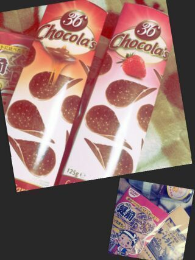

Hello )))
ろってぃーだよん♪
更新しようと思ったら
文章消えちゃって
最初から うちなおしてんの(*^^*)
ハッピーバレンタインデー
わずだね (*・ω・*)
昨日の晩から
私の胃袋さんの中で
チョコレートやクッキー...
甘くて可愛い小娘たちが
走りまわっておる(・ω・)/
ちょっとユニークで可愛いの
見つけちゃって
つい買っちゃったよ( ´▽`)
キャラメルとストロベリーの
チョコチップ。

昨日は キャラメルの方を
皆で食べたんだけど
開けた瞬間に
すんっごいキャラメルの
甘ぁ〜い香りが広がって
とっても美味しかった〃▽〃
それと
『君のハートに比べたら安いよ』
とか書いてある
昭和チックな紙袋に入った
チョコレートや
小学生の頃
和菓子屋によくあった
おっぱいチョコが
哺乳瓶に詰められてある物もあって
つい買っちゃったよぉ〜 (*´ω`*)
皆に直接渡せるんだったら
まひろ めっちゃめっちゃ頑張って
美味しいもの作るよ(´・ω・)?
ぢゃあ 今日も１日
頑張ろってぃーだねん♪
のし /